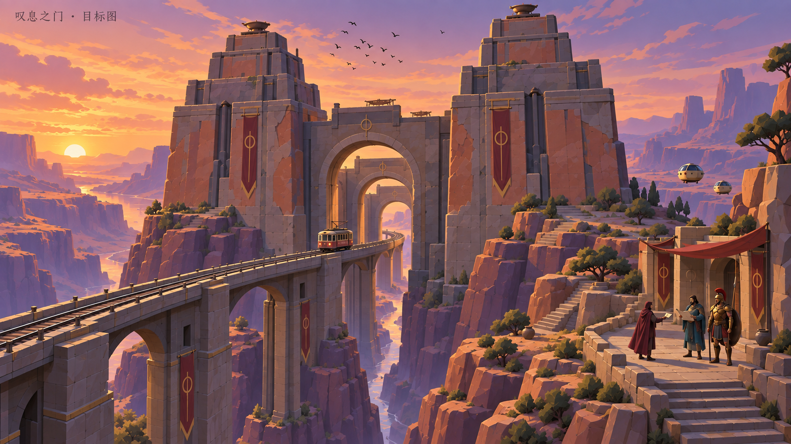

前后结构目标 · 2026-09-22
按用户要求补充：厚重台基与短退台、嵌入式拱墙、前后连续孔洞桥。设计图，尚非游戏实景。

下方桥体示意并非严格侧立面；三重门建模仍沿轨道纵深排列，不能横排。
按用户要求补充：厚重台基与短退台、嵌入式拱墙、前后连续孔洞桥。设计图，尚非游戏实景。
下方桥体示意并非严格侧立面；三重门建模仍沿轨道纵深排列，不能横排。
概念设计候选，等待认可；不是当前游戏实景。保留原作双子阶梯巨塔、纵深三重圆拱、穿门电车与独立步行通路。信使在会面台交付信件，与奥德休斯、阿克琉斯会面。

图内中文标题存在字形误差，以本页标题为准。此图用于确定构图与风格，建筑尺寸与通行净空需在建模时核验。